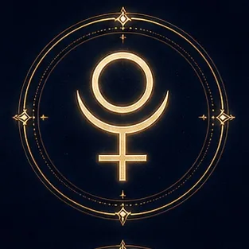

Energy
Death and rebirth, depth, power, crisis, purification.
Character of the energy
Intensity, insight, a drive to reach the hidden essence.
Influence on life
Pluto is connected with radical inner change, control, taboos, loss, and the recovery of personal power.
In its constructive expression
Resilience, psychological depth, the ability to heal and renew oneself.
In its shadow
Obsession, manipulation, power struggles, fear of losing control.
Formula
‘I transform.’
This description is symbolic and is not a scientific explanation of personality or fate. A planet’s expression in an actual natal chart depends on its sign, house and aspects. Astrology is not a scientifically established prediction; this material is not a diagnosis or financial advice.